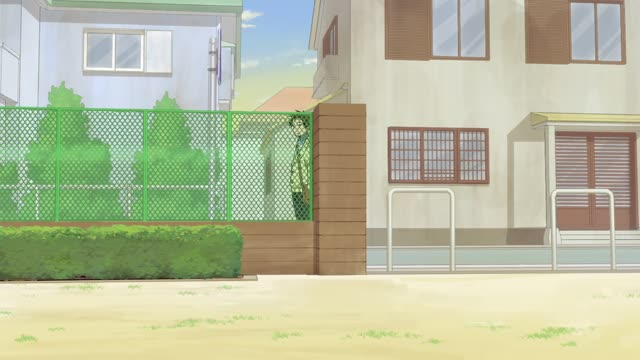

っけ・だっけ
| Polite | ～でしたっけ・～ましたっけ |
|---|---|
| Casual | ～だっけ・～たっけ |
Same meaning: "what was it again?". Only the politeness changes.
Noun or な-adjective? Add だ. Verb or い-adjective? Add んだ.
| Word | Add | Ending | ||
|---|---|---|---|---|
| Noun | 学生 | だ | っけ | He's a student, right? |
| な-adjective | 静か | だ | っけ | It's quiet there, right? |
| Verb | 行く | んだ | っけ | He's going, right? |
| い-adjective | 高い | んだ | っけ | It's expensive, right? |
Kekkon Dekinai Otoko · Episode 3
あっ どっかで お会いしましたっけ？
"Oh, have we met somewhere before?" [at a bar]
っけ checks your memory: you knew this once, but it's gone. "What was it again?", "did we...?". It's a question to yourself as much as to the other person.
It goes at the very end. Polite: でしたっけ or ましたっけ. On this card, she thinks she's seen him before and asks politely: お会いしましたっけ.
The past form is common even for things that are still true: the "past" is when you heard it.
Quartet · Episode 9
すずめちゃん 誕生日って ４月だっけ？
"Suzume, your birthday's in April, right?"
Casual uses だっけ after a noun, or the past form + っけ. On this card, she half remembers Suzume's birthday and checks it.
Quick Examples
You can't remember a coworker's name.
あの人、名前何だっけ？
"What's his name again?"
CasualAsking a shop clerk about closing time.
何時まででしたっけ？
"What time are you open until, again?"
PolitePacking for a trip with a friend.
明日、何時に出るんだっけ？
"What time are we leaving tomorrow again?"
Verb in the present: んだっけ.
CasualWith and without
誕生日はいつ？
When's your birthday? You never knew.
誕生日はいつだっけ？
When's your birthday again? You knew it once and forgot.
Examples from Media
Shirokuma Cafe · Episode 10
ありませんでしたっけ？
"You haven't? I thought you had."
He asks if he ever ordered gyoza at a café. ませんでしたっけ: "didn't you...?", checking what you remember.
Good Morning Call · Episode 13
あれ？ 一星さん 知りませんでしたっけ？
"Huh? Didn't you know, Issei?"
あれ？ often comes first: "huh, wait".
Aggretsuko · Season 1, Episode 8
社内合コンって 言ってませんでしたっけ？
"Didn't I say it was a mixer with people from our company?"
って here is casual は: "the mixer, didn't I say...".
Oishinbo · Episode 31
えっ あっ 何でしたっけ
"Huh? Oh, what was it again?"
何でしたっけ: the polite "what was it again?". Very common.
Teasing Master Takagi-san · Season 2, Episode 2
今日って 体育あったっけ？
"Do we have P.E. today?"
Past form あった, but it's about today: you're checking what you heard.
Brush Up Life · Episode 5
会うのって いつぶりだっけ？
"How long has it been since we last met?"
いつぶり: since when. With だっけ: "how long has it been again?".
Dungeon Meshi · Episode 20
ん… こんな道だったっけ？
"Hm... was the path like this?"
だったっけ: the past of だっけ. Same meaning here.

Kotaro Lives Alone · Episode 3
どのくらい もつんだっけ？
"How long do these last again?"
About balloons. With a verb in the present, casual adds んだ: もつんだっけ.